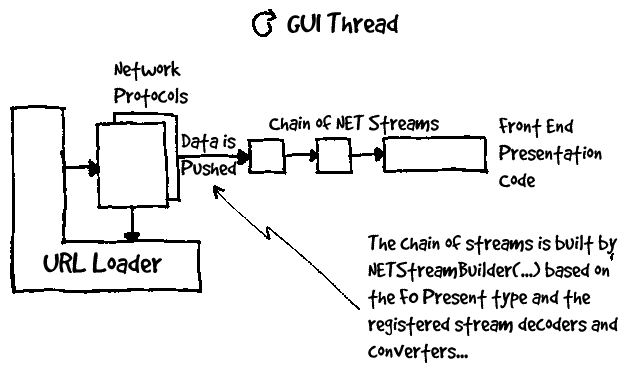
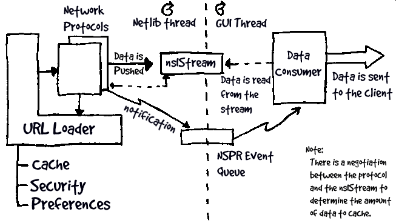

BAM
Modularizing the Network Layer
Last updated by Rick Potts on 3/8/98
Overview:
In my previous document, Gemini Networking
Layer, I attempted to describe the current state of the Netlib
and to propose a direction for its future. In this document I will
elaborate upon the proposed threading model and examine some of the structural
changes necessary for both the modularization and multithreading of Netlib.
Goals:
-
Modularize... Break out the NetLib into a stand-alone component.
-
Create simple, clean well defined APIs for interacting with the NetLib
functionality.
-
Make NetLib thread-safe (and/or multi-threaded as necessary). This
will allow protocol handling to be performed threads other than the main
UI thread.
-
Support both the current asynchronous push model and a blocking
i/o pull model.
-
Support pluggable protocols and mime-type converters.
Where we are now: 1
Currently, one presents an object by calling NET_GetURL with a URL structure
specifying the object, the desired presentation type, the front-end window
context, and an exit callback routine pointer. NET_GetURL eventually calls
the protocol-specific load routine (e.g., NET_HTTPLoad) to initiate the
object retrieval. This load routine starts the connection to the appropriate
server, and sets up the protocol state machine. When the load routine finds
itself doing a potentially blocking operation -- e.g. connect(2) -- it
performs the operation in a non-blocking manner, registers the socket with
the front end, and returns.
When the front end detects that the registered socket is ready, it calls
NET_ProcessNet. This then calls the protocol-specific process routine.
The protocol-specific routine looks at the current state of the protocol
FSM, uses this to complete the current operation and continue through to
the initiation of the next potentially blocking operation before setting
the state and returning. When the blocking operation is complete, the front
end again calls NET_ProcessNet and the FSM continues.
When enough information is obtained to determine the object type, the
protocol process routine calls NET_StreamBuilder to create a chain of modules
ending with the front-end presentation code. Then, as the FSM reads in
data, it pushes the data through this stream.
The protocol-specific modules call several front-end calls for a number
of reasons: to update the progress display, to prompt for passwords, to
alert the luser, etc.
When all data has been fetched, everything is cleaned up nicely. If
one of the NETLIB interrupt routines is called to interrupt one or more
operations, the appropriate protocol-specific interrupt routines are called
to jump the FSM into a shutdown state.
Here is a diagram of the current model:

Below is (a subset of) the current API:
int NET_GetURL(URL_Struct *, FO_Present_type, MWContext *, (*pfnExitFunc)())
int NET_ProcessNet(PRFileDesc *, int)
int NET_InterruptWindow(MWContext *)
int NET_InterruptStream(URL_Struct *)
|
The FO_Present_type (represented as an integer) is used to
indicate which front-end presentation code should receive the data.
This flag is also used to indicate whether the data should be cached (FO_CACHE_ONLY)
or if it should be loaded only from the cache (FO_ONLY_FROM_CACHE).
The MWContext is used for two purposes. It provides a set
of function pointers that Netlib uses to make upcalls into the client code.
It also serves as the owner of a network connection.
Where we need to go:
Currently, Netlib is responsible for creating the destination stream from
the FO_Present type supplied to NET_GetURL(...) by the caller.
This strategy has several drawbacks:
-
In its current implementation, the FO_Present namespace is not
dynamically extensible. This means that new front-end presentation
code (in the form of NET_Streams) cannot be dynamically added.
-
Since Netlib is responsible for mapping between a given FO_Present
type and a stream factory it must maintain a registry of stream handlers.
In a multithreaded implementation, this registry must be thread-safe.
-
This mechanism does not lend itself to a blocking i/o model.
I believe that the current FO_Present namespace and the NET_Stream infrastructure
should be replaced with an abstract data consumer object. This object
will receive the notifications and data from Netlib for a particular connection.
In this model, Netlib pushes the data into a generic nsIStream
(owned by Netlib) as it arrives from the network and notifies the data
consumer that stream data is available. It is the responsibility
of the data consumer read the data from the stream.
There will be a protocol between Netlib and the nsIStream to
limit the amount of data that is buffered for each connection.
Interrupting a connection is accomplished by closing the nsIStream
2. There is no built-in infrastructure to allow
closing all connections associated with an MWContext. This
is left up to particular clients to implement...
Here is a diagram of the new model:

Below is the new API:
nsResult NET_OpenStream(URL *, nsIStreamNotification *);
nsResult NET_OpenBlockingStream(URL *, nsIStreanNotification *,
nsIStream **);
|
Introducing a data consumer object has the following advantages:
-
Netlib becomes simpler and more flexible. A stream handler infrastructure
is not dictated by Netlib.
-
The nsIStream provided by Netlib is a natural rendezvous point
for multiple threads.
-
Supporting blocking I/O becomes trivial for any protocol. By providing
a blocking implementation of the nsIStream, the consumer will see a blocking
I/O model.
-
The data consumer can supply interfaces for additional client services
which Netlib may require. This mechanism replaces the MWContext
which is currently used for upcalls into the client.
-
The data consumer model can easily emulate the old stream handler infrastructure.
By providing a data consumer which bridges the new Netlib notifications
with the old stream handler APIs it is possible to incrementally migrate
the codebase to the new model without reworking all of the stream handlers
at once.
The data consumer implements an interface called nsIStreamNotification
3.
interface nsIStreamNotification
{
virtual nsResult GetBindInfo(...) = 0;
virtual nsResult OnProgress(...) = 0;
virtual nsResult OnStartBinding(...) = 0;
virtual nsResult OnDataAvailable(...) = 0;
virtual nsResult OnStopBinding(...) = 0;
} |
The data consumer will, optionally, implement an interface called
nsINetContext 4 .
interface nsINetContext
{
virtual nsResult Prompt(...) = 0;
virtual nsResult Confirm(...) = 0;
virtual nsResult GetPassword(...) = 0;
virtual nsResult RemoteHost(...) = 0;
}
|
This interface provides the callback functions used by Netlib to interact
with the user. If a particular protocol requires this interface and
it is not provided by the data consumer, the connection will fail..
Task List:
Modularity:
-
Replace all XP_xxx(...) calls with NSPR equivalents.
-
Break out the core Netlib functionality into a standalone DLL. Deal
with the APIs that are required between Netlib and the outside world.
-
Break out stream converters and registration code into separate obsolete
files.
-
Implement new stream APIs.
-
Implement a data converter bridge between the new stream notifications
and the old stream converter code.
-
Investigate URLStruct issues... This structure must be abstracted
as part of the API cleanup.
-
Replace MWContext with interface(s) negotiated via the data consumer
object.
-
Investigate pluggable protocol and mime-type converter APIs.
Thread safety:
-
Thread-safe cache.
-
Make Netlib thread-safe (as needed).
-
Thread-safe protocol implementations.
-
Thread-safe preferences APIs (as needed).
-
Investigate thread safety of security library.
See Also:
Notes:
1. This description was taken verbatim from
Multithreading the NETLIB protocols by
Frederick G.M. Roeber.
2. This mechanism seems both simple
and sufficient. However, if it proves inadequate a dedicated API
can be provided...
3. This interface is modeled after
the IBindStatusCallback
interface provided in the Microsoft Internet Client SDK.
4. This interface is modeled after
the NC interface provided by NETLIB II.